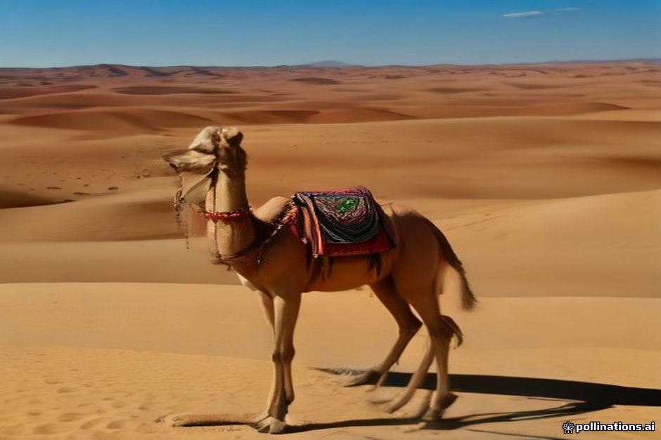

Tipping culture in Morocco often causes unnecessary stress for travelers. You want to be fair and show appreciation for good service, but you also want to avoid overpaying simply because you are a tourist. On a Sahara desert tour, your tips are usually distributed among a few key people who work behind the scenes to make the journey smooth.
Here is how we advise our travelers to handle tips on a trip from Marrakesh or Fes to Erg Chebbi. These are baseline suggestions based on local costs and standard practices, not strict rules. If someone does a poor job, you are under no obligation to tip at the top end of the scale.
Tipping Your Driver
Your desert driver is often with you for three to four days, handling long hours on winding mountain passes, managing luggage, and keeping you safe on the road. They are a crucial part of your experience.
A standard tip for a private driver ranges from 100 to 150 dirhams per day total from your party. If you are on a shared group tour, each traveler typically contributes around 30 to 50 dirhams per day.
- Private driver: 100-150 MAD per day total
- Shared tour driver: 30-50 MAD per person per day
Tipping Local Guides
Along the route, you will likely meet local city guides in places like Ait Benhaddou or specialized camel guides in the dunes of Merzouga. These are usually short-term interactions lasting a few hours.
For local walking guides, 50 to 100 dirhams total is standard. For your camel handler who leads you into the Erg Chebbi dunes for the night, 50 to 100 dirhams per person is a solid, fair amount for their effort.
Tipping Desert Camp Staff
Desert camps rely on a small team of local staff who cook, clean, haul water, maintain the tents, and play music around the campfire at night. Guests often forget to tip the back-of-house workers because they deal mostly with the drivers and camel handlers.
It is best to leave a collective tip in the camp's communal tip box on your morning of departure, or hand it directly to the camp manager to distribute evenly among the kitchen and maintenance staff. Aim for 50 to 100 dirhams per room or tent for the night.
Practical Currency and Timing
Always tip in Moroccan Dirhams (MAD). While guides and drivers may accept Euros or Dollars out of politeness, coins and foreign banknotes are difficult and expensive for locals to exchange at banks.
Keep a stash of smaller denomination notes (20 and 50 dirhams) specifically for tipping. Trying to break a 200 dirham note for a small tip at the end of a camel trek is rarely convenient.
| Private Tour Rate | Shared Tour Rate | |
|---|---|---|
| Driver (per day) | 100 - 150 MAD total | 30 - 50 MAD per person |
| Camel Guide | 50 - 100 MAD total | 50 MAD per person |
| Desert Camp Staff | 50 - 100 MAD per room/tent | 50 MAD per person |
| City Walking Guide | 50 - 100 MAD total | 20 - 30 MAD per person |

Illustration, not a photograph — for the real thing, you'll have to stand on the ridge yourself.
Quick answers
A few follow-up questions travelers ask about this.
Should I tip in Euros or US Dollars?
It is always best to tip in Moroccan Dirhams. Local staff lose money paying high exchange fees on foreign paper currency and cannot exchange foreign coins at all.
Is tipping mandatory in Morocco?
Tipping is not legally required, but it is a customary part of the service economy in tourism. If service was good, tipping is expected; if service was poor, you are not obligated to tip.
How do I tip the camp staff anonymously?
Most established desert camps have a wooden tip box at the dining tent or reception desk where you can drop your contribution before leaving.
Planning your own route?
Tell us your dates and what matters to you — we'll answer with a straight recommendation, not a brochure.
Send an inquiry See the itineraries